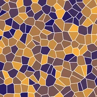

Voronoi Cells

Fills the opaque parts of the layer with a pattern of cells around randomly placed points.
Settings
| Setting | Type | Range | Default |
|---|---|---|---|
| Scale | Number | 0.01 to 100 | 1 |
| Phase | Number | -99 to 99 | 0 |
| Line Width | Number | 0 to 1 | 0 |
| Color 1 | Color | – | #FFFFFF |
| Color 2 | Color | – | #000000 |
| Line Color | Color | – | #0000FF |
| Seed | Number | 0 to 5 | 0 |